Implementation of different “Mother Shearlets”¶
The classes, functions and objects in this module make it (comparatively) easy to define custom generating functions which act as “Mother shearlets”.
Warning
Implementing custom “Mother shearlets” is a complex task and thus should only be done if really needed. Proceed with caution.
To implement a custom set of generating functions, all one needs to do is
to create a suitable object of the class MotherShearlet and pass
it to the constructor of the AlphaTransform.AlphaShearletTransform,
via the mother_shearlet parameter.
In a nutshell, in our implementation, a shearlet system is determined by
A low-pass filter which is given by 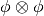, where
 is given by the
is given by the low_pass_functionattribute of classMotherShearlet.A mother shearlet
 , which in our case is (in Fourier domain)
given by
, which in our case is (in Fourier domain)
given by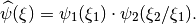
Here,
- we call
 the scale-sensitive generating function.
It is given by the
the scale-sensitive generating function.
It is given by the scale_function`attribute of classMotherShearlet. - we call
 the direction sensitive generating function.
It is given by the
the direction sensitive generating function.
It is given by the direction_functionattribute of classMotherShearlet.
- we call
See the documentation of MotherShearlet below for more details.
The class BumpFunction¶
-
class
MotherShearlets.BumpFunction¶ Each instance of this class encapsulates a specific (one-dimensional) bump function
f.Attributes:
-
support¶ A tuple
(a,b)such that the bump functionfmodeled by this object satisfies .
.
-
large_support¶ A tuple
(a,b)such that the bump functionfmodeled by this object is “large” on , i.e.,
, i.e.,
 on for a (reasonably large)
constant
on for a (reasonably large)
constant  , e.g. 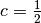.
, e.g. 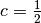.
-
call¶ A callable object calculating
f(x)givenx. This should be vectorized, i.e.,call()should accept numpy arrays (numpy.ndarray) and applyfcomponentwise.
-
theano_call¶ This should be a callable object doing the same as
call, but working ontheano.tensor.dmatrixobjects.Note
Currently, this attribute is not used anywhere and can thus be set arbitrarily (e.g. to
None).
-
The class MotherShearlet¶
-
class
MotherShearlets.MotherShearlet¶ Each instance of this class acts as a container for the three (main) components determining an alpha-shearlet system.
The actual mother shearlet
is given by
- where:
- is given by the
scale_functionattribute, - is given by the
direction_functionattribute.
Finally, the low frequency component of the shearlet system is given by (tensor product), where
is given by the low_pass_functionattribute.Note
All attributes are expected to be of type
BumpFunction.Finally,
- if
(a,b) = scale_function.large_support, then it is expected that:a,b > 0b/a >= 2.
- if
(a,b) = direction_function.large_support, it is expected that:b >= 1/2,a <= -1/2.
BumpFunction-related helper functions¶
-
MotherShearlets.translate(f, x_0)¶ This function translates a
BumpFunctionobjectf, i.e., it returns , where
, where  .
The new support is thus
.
The new support is thus  .
.Parameters:
Parameters: - f (BumpFunction) – The
BumpFunctionobject which should be translated. - x_0 (float) – The translation parameter.
Return value:
Returns: A new BumpFunctionobject representing the translated function.- f (BumpFunction) – The
-
MotherShearlets.scale(f, a)¶ This function scales a
BumpFunctionobjectf, i.e., it returns .
The new support is thus
.
The new support is thus  .
.Parameters:
Parameters: - f (BumpFunction) – The
BumpFunctionobject which should be translated. - a (float) – The scale parameter (positive real number).
Return value:
Returns: A new BumpFunctionobject representing the scaled function.- f (BumpFunction) – The
-
MotherShearlets.flip(f)¶ This function “flips” a
BumpFunctionobjectf, i.e., it returns 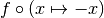. The new support is thus 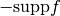.Parameters:
Parameters: f (BumpFunction) – The BumpFunctionobject which should be flipped.Return value:
Returns: A new ‘BumpFunction’ object representing the flipped function.
Meyer mother shearlet implementation¶
The object MotherShearlets.MeyerMotherShearlet is an instance
of MotherShearlet.
It uses
meyer_low_pass()as the generating function for the low-pass part,meyer_scale_function()as the scale-sensitive generating function.meyer_direction_function()as the direction sensitive generating function.
-
MotherShearlets.meyer(A)¶ This function implements the function
vfrom the paper Fast Finite Shearlet Transform.It rises smoothly between 0 and 1. In particular, 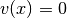 for
 and
and
 for
for  .
.Parameters:
Parameters: A (numpy.ndarray) – The input (matrix with real entries). Return value:
Returns:  , i.e. the function
, i.e. the function vapplied to each entry ofA.
-
MotherShearlets.meyer_scale_function(R)¶ This is an implementation of the function
 from the paper
Cartoon approximation with α-Curvelets.
from the paper
Cartoon approximation with α-Curvelets.- The main properties of this function are the following:
![\mathrm{supp} \tilde{W} \subset [1/2, 2]](_images/math/79c41290030f159a2a63d1b32e4628f35580397d.png) .
. on
on ![[3/4, 3/2]](_images/math/8ed63ebba5a813ade2fd2a70f646cad28f71fb90.png) .
.
Note
The quotient of the bounds of the interval where
is 1 is precisely 3/2 * 4/3 = 2, so that the function is suitable as
a scale_function for the MotherShearletclass.Parameters:
Parameters: R (numpy.ndarray) – The input (matrix with real entries). Return value:
Returns:  , i.e., applied componentwise.
, i.e., applied componentwise.
-
MotherShearlets.meyer_low_pass(A)¶ This function uses the
meyer()function to construct a bump function with the following properties:- 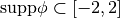,
- 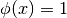 for 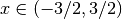.
Parameters:
Parameters: A (numpy.ndarray) – The input (matrix with real entries). Return value:
Returns:  , i.e. the function applied to each entry
of
, i.e. the function applied to each entry
of A. Precisely, 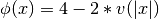, wherevis the functionmeyer().
-
MotherShearlets.meyer_direction_function(A)¶ This is an implementation of a direction function
f, i.e., it can be used for the attributedirection_functionof the classMotherShearlet.- The main properties of this function are the following:
- 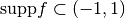,
 on
on  ,
,fis symmetric.
The implementation uses the
meyer()function.Parameters:
Parameters: A (numpy.ndarray) – The input (matrix with real entries). Return value:
Returns: f(A), i.e.fis applied componentwise.
Haeuser mother shearlet implementation¶
The Häuser mother shearlet is the one which is used in the paper
Fast Finite Shearlet Transform by S. Häuser and G. Steidl. In our implementation, it is
represented by the object MotherShearlets.HaeuserMotherShearlet,
which is an instance of MotherShearlet.
It uses
meyer_low_pass()as the generating function for the low-pass part,haeuser_scale_function()as the scale-sensitive generating function,haeuser_direction_function()as the direction sensitive generating function.
-
MotherShearlets.haeuser_scale_function(A)¶ This is an implementation of the function
bfrom the paper Fast Finite Shearlet Transform, but with support restricted to positive numbers, whereas in the paper, the function is symmetric.This function is supported in [1,4], is “large” on [2,3] and satisfies
 for all
for all  .
.Furthermore, 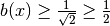 for
![x \in [1.5, 3]](_images/math/0c66ff3482b86d96bb3946a6d7cf624b5df1102f.png) . Thus,
. Thus, bis a good candidate for ascale_function, cf.MotherShearlet.Parameters:
Parameters: A (numpy.ndarray) – The input (a matrix with real entries). Return value:
Returns: b(A), i.e.,bis applied componentwise.
-
MotherShearlets.haeuser_direction_function(A)¶ This is an implementation of the function
 from the paper Fast Finite Shearlet Transform (cf. eq. (6) in that paper).
from the paper Fast Finite Shearlet Transform (cf. eq. (6) in that paper).This function has support in [-1,1], is “large” on [-1/2,1/2] and satisfies 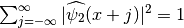 for all x.
Thus,
is a good candidate for a
direction_function, cf.MotherShearlet.Parameters:
Parameters: A (numpy.ndarray) – The input (a matrix with real entries). Return value
Returns:  , i.e., is
applied componentwise.
, i.e., is
applied componentwise.
Indicator mother shearlet implementation¶
The “indicator” mother shearlet is a mother shearlet which is used purely for testing purposes. The low-pass part and the mother shearlet determined by its generating functions are indicator functions in the Fourier domain. Hence, a shearlet system using this mother shearlet will have very bad time localization.
The “indicator” mother shearlet is represented by the object
MotherShearlets.IndicatorMotherShearlet, which is an instance of
MotherShearlet. It uses
![\chi_{[-1,1]}](_images/math/e7287a714a30e8e97be414ce2f6ef28950059df3.png) as the low-pass part of the set of generating
functions,
as the low-pass part of the set of generating
functions,![\chi_{[1,2]}](_images/math/d133d821be0d89e522a8a8927b6846db8bea28e9.png) as the scale-sensitive generating function, and
as the scale-sensitive generating function, and- 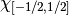 as the direction sensitive generating function.
-
MotherShearlets.indicator_scale_function(A)¶ Vectorized implementation of the indicator function
,
which can be used as a scale_function, mainly for testing purposes (since the space localization is horrible).Parameters:
Parameters: A (numpy.ndarray) – The input (matrix with real entries). Return value:
Returns: ![\chi_{[1,2]}(A)](_images/math/b3b91e4dc5e3e241fb001a147909c1bfb5c96572.png) , applied componentwise.
, applied componentwise.
-
MotherShearlets.indicator_low_pass_function(A)¶ Vectorized implementation of the indicator function
,
which can be used as a low_pass_function, mainly for testing purposes (since the space localization is horrible).Parameters:
Parameters: A (numpy.ndarray) – The input (matrix with real entries). Return value:
Returns: ![\chi_{[-1,1]}(A)](_images/math/394101e1f2d806e2d8f028a8f540e18dfb579b0c.png) , applied componentwise.
, applied componentwise.